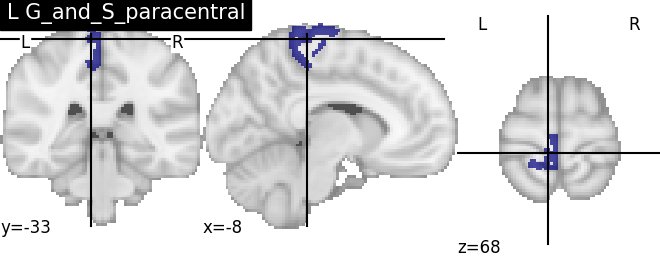

Note
Click here to download the full example code
Datalog Intermediate Representation Example based on the Destrieux Atlas¶
Uploading the Destrieux left sulci into NeuroLang and executing some simple queries.
import nilearn
import numpy as np
from matplotlib import pyplot as plt
from nilearn import plotting
import nibabel as nib
from neurolang.datalog.chase import Chase
from neurolang import expression_walker as ew
from neurolang import expressions, region_solver, regions
from neurolang.datalog import DatalogProgram
from neurolang.datalog.expressions import Fact, Implication, TranslateToLogic
Set up IR shortcuts
C_ = expressions.Constant
S_ = expressions.Symbol
Imp_ = Implication
Fact_ = Fact
Eb_ = expressions.ExpressionBlock
Load the Destrieux example from nilearn as a fact list¶
atlas_destrieux = nilearn.datasets.fetch_atlas_destrieux_2009()
image = nib.load(atlas_destrieux['maps'])
image_data = image.get_data()
Out:
/opt/hostedtoolcache/Python/3.7.9/x64/lib/python3.7/site-packages/numpy/lib/npyio.py:2349: VisibleDeprecationWarning: Reading unicode strings without specifying the encoding argument is deprecated. Set the encoding, use None for the system default.
output = genfromtxt(fname, **kwargs)
/home/runner/work/NeuroLang/NeuroLang/examples/plot_load_destrieux_datalog_ir.py:39: DeprecationWarning: get_data() is deprecated in favor of get_fdata(), which has a more predictable return type. To obtain get_data() behavior going forward, use numpy.asanyarray(img.dataobj).
* deprecated from version: 3.0
* Will raise <class 'nibabel.deprecator.ExpiredDeprecationError'> as of version: 5.0
image_data = image.get_data()
Load the regions into Voxel-style regions
region_dict = {}
for label, name in atlas_destrieux['labels']:
if label == 0:
continue
voxels = np.transpose((image_data == label).nonzero())
if voxels.shape[0] == 0:
continue
r = regions.ExplicitVBR(
voxels,
image.affine, image_dim=image.shape
)
region_dict[name.decode('utf8')] = r
plotting.plot_roi(region_dict['L S_temporal_sup'].spatial_image())
Out:
<nilearn.plotting.displays.OrthoSlicer object at 0x7febcd9e67d0>
Make the fact list
destrieux = S_('Destrieux')
destrieux_facts = [
Fact_(destrieux(
C_(name),
C_(region)
))
for name, region in region_dict.items()
]
Set the datalog interpreter with Region-managing builtins and adding lh, lr¶
class Datalog(
region_solver.RegionSolver,
TranslateToLogic,
DatalogProgram,
ew.ExpressionBasicEvaluator
):
def function_lh(self, x: str) -> bool:
return x.startswith('L ')
def function_rh(self, x: str) -> bool:
return x.startswith('R ')
Construct a query¶
- superior_sts_l(name, r) :- destrieux(‘L S_temporal_sup’, superior_sts_l),
anatomical_superior_of(r, superior_sts_l), lh(name), destrieux(name, r)
superior_sts_l = S_('region_l_sts')
r = S_('r')
name = S_('name')
r1 = Imp_(
S_('superior_sts_l')(name, r),
destrieux(C_('L S_temporal_sup'), superior_sts_l) &
S_('anatomical_superior_of')(r, superior_sts_l) &
S_('lh')(name) &
destrieux(name, r)
)
print(r1)
datalog_program = Eb_(
destrieux_facts + [
r1,
]
)
Out:
Implication{λ{S{superior_sts_l: Unknown}: Unknown}(S{name: Unknown}, S{r: Unknown}) ← λ{C{and_: typing.Callable[[neurolang.type_system.Unknown, neurolang.type_system.Unknown], neurolang.type_system.Unknown]}: Unknown}(λ{C{and_: typing.Callable[[neurolang.type_system.Unknown, neurolang.type_system.Unknown], neurolang.type_system.Unknown]}: Unknown}(λ{C{and_: typing.Callable[[neurolang.type_system.Unknown, neurolang.type_system.Unknown], neurolang.type_system.Unknown]}: Unknown}(λ{S{Destrieux: Unknown}: Unknown}(C{'L S_temporal_sup': str}, S{region_l_sts: Unknown}), λ{S{anatomical_superior_of: Unknown}: Unknown}(S{r: Unknown}, S{region_l_sts: Unknown})), λ{S{lh: Unknown}: Unknown}(S{name: Unknown})), λ{S{Destrieux: Unknown}: Unknown}(S{name: Unknown}, S{r: Unknown}))}
Interpreting and running the query¶
dl = Datalog()
dl.walk(datalog_program)
solution = Chase(dl).build_chase_solution()
Extracting the results from the intermediate representation to a python set and plotting the first element of the result
rsbv = ew.ReplaceExpressionsByValues({})
result = rsbv.walk(solution['superior_sts_l'])
for name, region in result.unwrapped_iter():
plt.figure()
plotting.plot_roi(region.spatial_image(), title=name)

- 


Out:
/home/runner/work/NeuroLang/NeuroLang/examples/plot_load_destrieux_datalog_ir.py:139: RuntimeWarning: More than 20 figures have been opened. Figures created through the pyplot interface (`matplotlib.pyplot.figure`) are retained until explicitly closed and may consume too much memory. (To control this warning, see the rcParam `figure.max_open_warning`).
plt.figure()
Total running time of the script: ( 0 minutes 56.542 seconds)